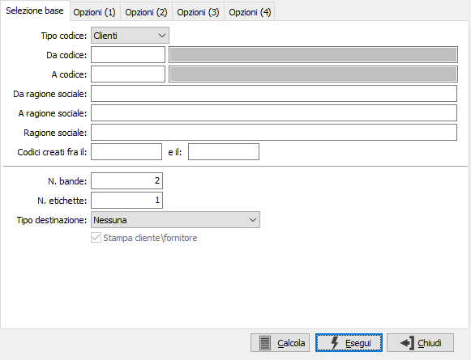
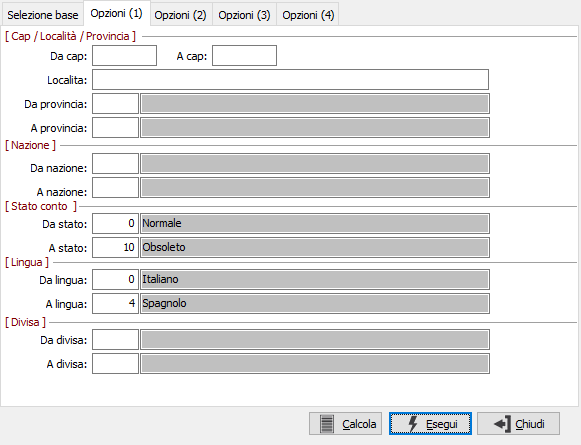
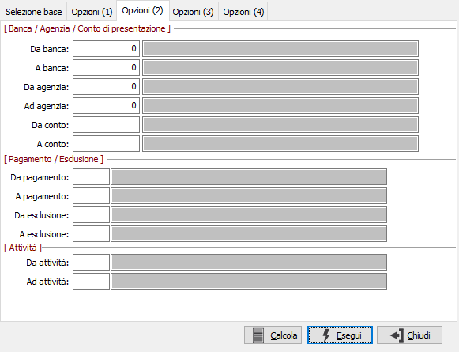
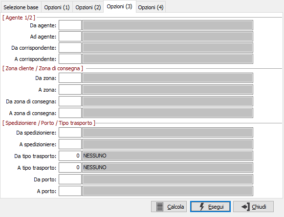
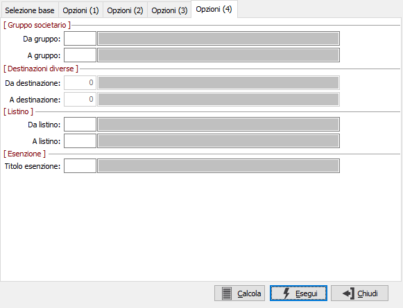

Stampa etichette clienti/fornitori
Il programma consente di effettuare il conteggio delle anagrafiche clienti o fornitori esistenti, sulla base di un consistente numero di parametri di selezione, e di effettuare la stampa di etichette su più bande.
Accedendo al programma, viene visualizzata la prima finestra video di selezione base in cui vengono definiti i criteri generali di elaborazione. È quindi possibile, accedendo alle 4 linguette di opzioni, limitare i criteri di selezione in base ai parametri previsti da ciascuna sezione.
La funzione “calcola” provvede a visualizzare il numeri di etichette da stampare, corrispondente al numero di clienti o fornitori esistenti nella tabella in base ai parametri indicati. La funzione “Esegui” genera invece la stampa effettiva.
Al programma si accede tramite Archivi, Generali, Stampa etichette cli/for. Appaiono le seguenti maschere video per le quali, dato l’evidente significato delle etichette dei campi, si omettono le note operative:




